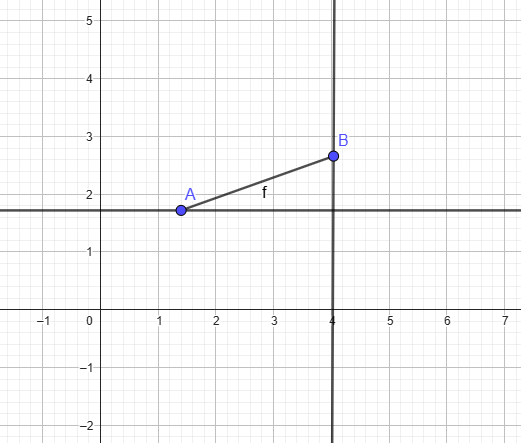
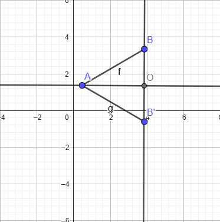
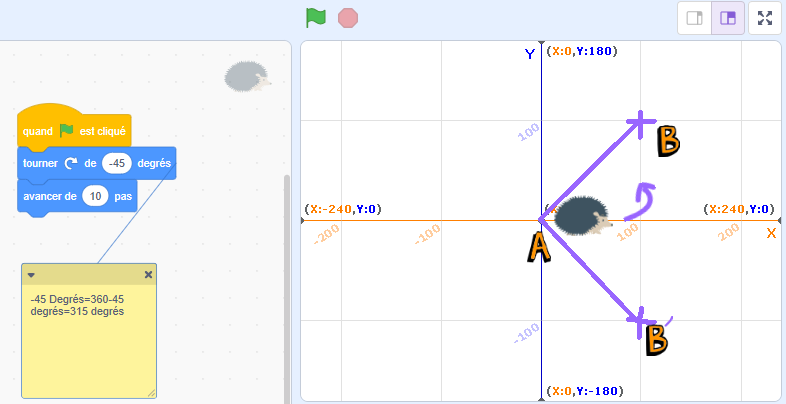
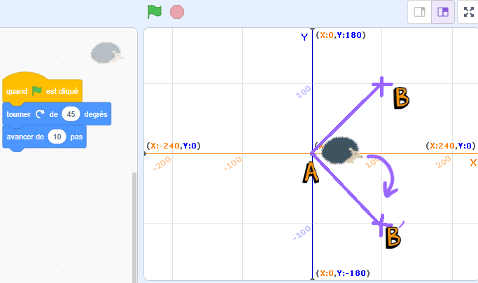
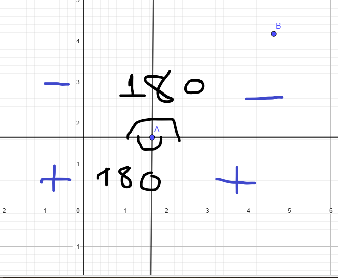
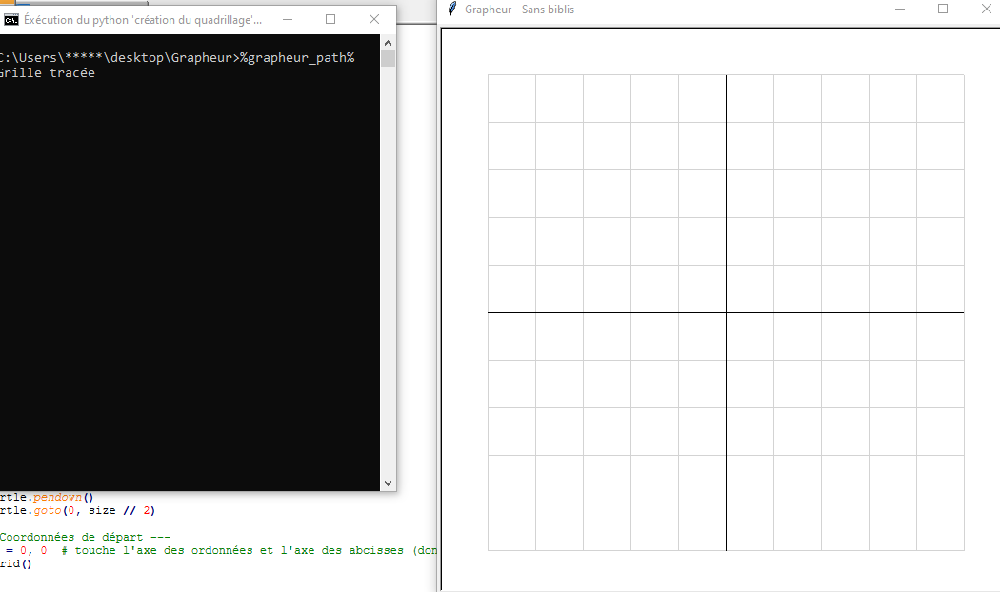
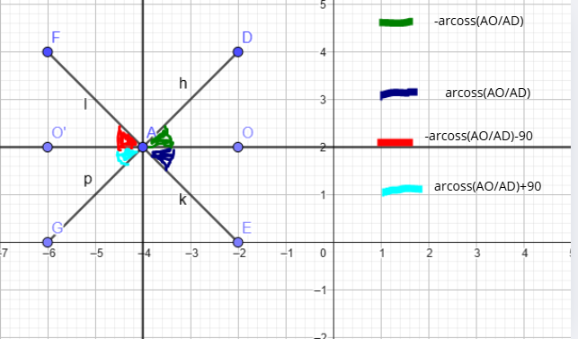

Sur ma calculatrice NumWorks, j’ai toujours été émerveillé devant la fonctionnalité grapheur.
J’aimerais recréer cela en Python, mais **sans utiliser de bibliothèques graphiques** comme tkinter ou matplotlib.
Au début, j'ai essayé une première approche: à partir d'une expression, mon script calculait la pente ainsi que l'ordonnée à l'origine de la fonction. Malheuresement, bien qu'élégante, mon approche restait extrènement limitée. Comment les arrondis sont-ils possible à tracer ? (comme un simple fonction carré) Aujourd'hui, Lundi 26 mai 2025, j'ai enfin compris quelque chose...
En regardant la partie grapheur de ma calculatrice de plus près, j'ai remarqué qu'elle ne calculait pas un coefficient directeur mais toutes les valeurs de y pour des valeurs de x calculées avec un interval (par exemple x=0.01; 0.02...) quand on zoom ou dézoom, cet interval s'ajuste tout simplement, d'où le léger délais et le raffraichissement d'écran. On peut donc facilement recréer un grapheur en python sans réel besoin de bibliothèques (sauf math et turtle)
Comment faire ? Quelles sont les difficultés du projet ?
→ Il faut faire un input qui demande l'expression d'une fonction
→ Il faut tracer l'axe des abcisses et des ordonnées et définir le centre comme l'origine du repère
→ La fonction est extraite et réorganisée de façon à pouvoir être interprêtée par le script (par exemple transformer 3x+5 en 3*x+5)
→ Une boucle part de xmin jusqu'à xmax en calculant f(x+0.01) avec x=x+0.01 à chaque boucles, on pourrait définir un fonction f(x) avec l'expression réorganisée de l'input
→ Le problème c'est qu'il faut relier plusieurs points. Il faut donc dire au script à combien de degrés s'orienter et de combien avancer. Pour cela, nous allons devoir faire des maths, pour savoir de combien avancer, c'est relativement simple avec le théorème de pythagore par exemple, mais pour l'orientation, cela va être plus compliqué...

Créé avec GeoGebra – www.geogebra.org
Xa et Xb sont des valeurs prises sur la même droite tout comme Ya et Yb donc le triangle est rectangle. D'après le théorème de pythagore, la longeur AB est de: $$AB=\sqrt{\underbrace{(X_b - X_a)^2}_{\text{Longeur du triangle}} + \underbrace{(Y_b - Y_a)^2}_{\text{Hauteur du triangle}}}$$
$$AB=\sqrt{\underbrace{(X_a - X_b)^2}_{\text{(A-B)^2=(B-A)^2}} + \underbrace{(Y_a - Y_b)^2}_{\text{Idem}}}$$
Le problème, c'est pour calculer à combien s'orienter:
Les formules trigonométriques utilisent la longueur des côtés. Le cosinus d'un angle, par exemple, utilise le rapport entre le côté adjaccent à cet angle par l'hypothénuse du triangle
cos(Â)=(Xb-Xa)/AB

Créé avec GeoGebra – www.geogebra.org
Le problème est qu'on a aucun moyen de discerner le triangle AOB du triangle AOB': O étant le milieu du segment B'B. D'un côté, géométriquement parlant, ce sont les mêmes triangles: ils sont symétriques et le plan est retournable.
D'un autre côté, ce ne sont pas les mêmes triangles si on part du principe que c'est un quadrant: ^(OAB)=^(OAB') mais par rapport à notre droite de référence passant par [AO] l'un aura une orientation négative et l'autre positive
Prenons un exemple simple en scratch

Créé avec Scratch – scratch.mit.edu
Le petit hérisson part de l'axe des abcisses et pour tracer [AB], avant d'avancer, il doit s'orienter à \( -\widehat{OAB} \) et non \( \widehat{OAB} \) tandis que pour tracer [AB'], il doit s'orienter à \( \widehat{OAB} \) degrés.

Créé avec Scratch – scratch.mit.edu
Le problème est le même avec les sinus et tangentes puisqu'ils se basent uniquement sur des rapports de longueurs (donc en valeur absolue), ils nous donnent l'angle ^(OAB) qui est égal à ^(OAB') mais c'est tout!
En réalité, ce qu'on cherche, c'est cet angle par rapport à la droite parallèle à l'axe des abcisses passant par le milieu de BB'.
En réfléchissant un peu, j'ai trouvé la solution: il faut vérifier si Yb est inférieur à Ya (donc B en dessous de A) ce qui veut dire qu'il faut s'orienter dans le sens des aiguilles d'une montre donc positivement. En cas inverse, il faut s'orienter négativement
En gros, il faut ajouter une condition qui vérifie si B est en dessous ou au dessus de b. Cela nous permet de savoir si on s'oriente à +Arcoss((Xb-Xa)/AB) degrés ou -Arcoss((Xb-Xa)/AB) degrés.
ça a l'aire compliqué mais regardez cette représentation que j'ai construite sur Géogébra:

Créé avec Géogébra www.geogebra.org
Comme Arcoss est comprise entre 0 et 180 degrés et que le sens d'orientation choisi est dans le sens des aiguilles d'une montre, quand B est en dessous de A, on s'oriente à Arcoss(...) car on va dans le sens des aiguilles d'une montre. Dans l'autre cas, il faut s'orienter à -Arcoss(...)
Allez, codons !
Déjà, importons les bibliothèques nécessaires au projet:
Nous allons être obligés d'importer la bibliothèque math qui va nous être indispensable pour utiliser des fonctions, pour plus d'informations, vous pouvez La documentation de math
Nous allons également devoir utiliser turle: Cette bibliothèque est indispensable pour gérer les tracés de notre grapheur. Pour plus d'infos, vous pouvez égaement consulter La documentation de turle
On se retrouve donc avec
import turtle
import math
Il nous faut maintenant tracer la grille et les axes:
python
# --- Paramètres du quadrillage ---
step = 50 # distance entre les lignes du quadrillage
size = 500 # taille du plan
# --- Initialisation de la fenêtre ---
turtle.setup(size + 100, size + 100)
turtle.speed(0)
turtle.hideturtle()
turtle.bgcolor("white")
turtle.title("Grapheur - Sans biblis")
# --- Quadrillage ---
def draw_grid():
turtle.pencolor("lightgray")
for x in range(-size // 2, size // 2 + 1, step):
turtle.penup()
turtle.goto(x, -size // 2)
turtle.pendown()
turtle.goto(x, size // 2)
for y in range(-size // 2, size // 2 + 1, step):
turtle.penup()
turtle.goto(-size // 2, y)
turtle.pendown()
turtle.goto(size // 2, y)
# Axes
turtle.pencolor("black")
turtle.penup()
turtle.goto(-size // 2, 0)
turtle.pendown()
turtle.goto(size // 2, 0)
turtle.penup()
turtle.goto(0, -size // 2)
turtle.pendown()
turtle.goto(0, size // 2)
# --- Coordonnées de départ ---
X0, Y0 = 0, 0 # touche l'axe des ordonnées et l'axe des abcisses (donc en gros axe de symétrie)
Et on appelle la fonction avec draw_grid()
Et voilà, on obtient maintenant cela en éxécutant le script python:

Si vous avez du mal à comprendre ce que fait le programme, vous pouvez consulter ma rubrique Informatique>learnpython>premierspas . De manière assez simplifiée, voici un programme que j'ai codé sur scratch assez similaire:
On va maintenant créer une fonction f(x), pour le moment, prédéfinie sur 2x+3:
def Fonction(x): return 2 * x + 3
On commence notre code par créer un xmin et xmax (plus tard adaptable si on décide de créer une échelle) et on s'oriente au niveau du point le plus à gauche à calculer tel qu'il forme un point G(xmin; fonction(xmin)), on se met à ce point avec turtle.goto(xa, ya)0
On va maintenant rentrer dans le vif du sujet puisque toute la logique que je vous ai expliqué précédemment va rentrer en jeu:
Création d'une fonction avancer_et_orienter avec en paramètre les coordonnées de deux points:
python
def avancer_et_orienter(xb, yb, xa, ya):
AB=math.sqrt((xa-xb)**2+(ya-yb)**2) #Comme xb=xa+1, on pourrait juste mettre '((1/10)**2+(ya-yb)**2)**1/2' mais c'est mieux ainsi au cas où on adapterait les pas (de 1/10 ici)
Orientation=math.acos((xb-xa)/AB)
angle_degres = math.degrees(Orientation) # Conversion en degrés (fois pi/180)
if yb > ya:
Orientation=360-Orientation #En théorie, on pourrait juste mettre un - mais je préfère les angles positifs
turtle.setheading(Orientation)
turtle.pendown()
turtle.forward(AB) #On avance de la longeur exacte entre A(xa;ya) et B(xa+1;fonction(a+1))-->Donc pas besoin de calculer xb ni yb, il nous faut juste un compteur qui ajoute 1 à x à chaque fois
turtle.penup()
turtle.setheading(90) #s'orienter à 90 degrés pour revenir à l'orientation initiale
L'heure du test était arrivée, tout content, je cliquai sur le script et là... Horreur😱, deux fautes magistrales étaient présentes dans mon code. Au lieu de tout corriger, je vais vous expliquer mais pour ça, on va devoir refaire des maths
Un problème d'échelle:
...
Attendez, pas si vite! on oublie atan2 !!!
Tout à l'heure, je vous ai dit qu'avec les formules trigonométriques, nous ne pouvions pas discerner les deux triangles ci-dessous car elles prennent les longueurs en compte. J'ai ensuite dit qu'il suffisait de regarder si B est au dessus de A.
Créé avec GeoGebra – www.geogebra.org
En revanche, j'avais complètement oublié deux autres cas où le triangle serait le même:

Créé avec GeoGebra – www.geogebra.org | Édité sur Canva - https://www.canva.com
Légende commentée
\( -\widehat{DAO} \) → Il faut s'orienter à -arcoss(AO/AD)degrés soit 360-arcoss(AO/AD) degrés
\( -\widehat{EAO} \) → Il faut s'orienter à arcoss(AO/AD)degrés
\( -\widehat{GAO'} \) → Il faut s'orienter à -arcoss(AO/AD)-90 degrés soit 270-arcoss(AO/AD) degrés
\( -\widehat{FAO'} \) → Il faut s'orienter à arcoss(AO/AD)+90 degrés
Légende commentée